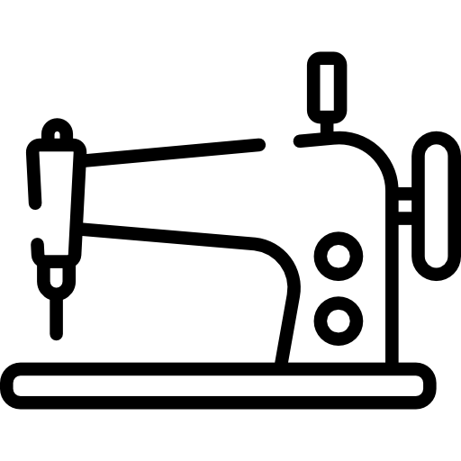
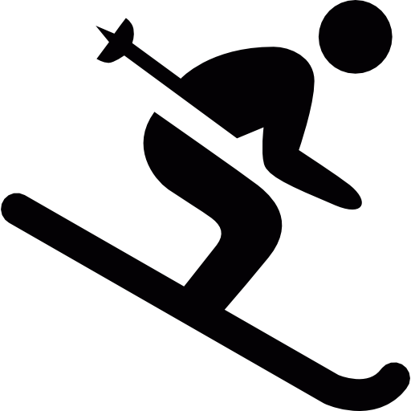

ERP-Umstellung auf Business Central
Wechsel von Microsoft Navision (NAV) zu Microsoft Dynamics 365 Business Central für Einkauf, Warenwirtschaft und Logistik.
TeilprojektleitungIch bin eine offene und zugängliche Person und arbeite gerne dort, wo Tagesgeschäft und Projekte zusammenkommen. Als Process Owner für Microsoft Dynamics 365 Business Central arbeite ich seit drei Jahren an der Schnittstelle zwischen Fachbereichen, IT und externen Partnern – genau dort, wo Anforderungen entstehen und übersetzt werden müssen.
In der Zusammenarbeit sind mir Klarheit, gegenseitiger Respekt und Humor wichtig. Wenn ich nicht arbeite oder an der Berner Fachhochschule (BFH) studiere, bin ich meistens in den Bergen unterwegs – mit meinem Dachzelt oder zu Fuss.
Neben den Sachbearbeitungsaufgaben konnte ich mich bei Transa Backpacking in folgenden Bereichen weiterentwickeln:
Nach meiner Weltreise habe ich in Arosa eine Saisonstelle angetreten. Gäste aus verschiedenen Ländern zu betreuen, hat mir viel Freude bereitet.
Wechsel von Microsoft Navision (NAV) zu Microsoft Dynamics 365 Business Central für Einkauf, Warenwirtschaft und Logistik.
TeilprojektleitungAnbindung des neuen Lagerverwaltungssystems (WMS) unseres externen Lagerdienstleisters an Microsoft Business Central.
Process OwnerinFilialen scannen den EAN-Code mit dem MDE-Gerät: Ein Signalton zeigt sofort, ob der Artikel in den Ausverkauf kommt, und der neue Preis wird angezeigt. Knackpunkt: Die Angebote sind zu diesem Zeitpunkt noch nicht aktiv – gelöst über eine spezielle Angebotsbezeichnung.
Konzept & UmsetzungStatt anzurufen, scannen Filialmitarbeitende den EAN-Code mit dem MDE-Gerät und geben den gewünschten Meldebestand ein. Der Einkauf sieht die Anfragen direkt in seiner Kachel in Business Central und gibt sie frei oder lehnt sie ab.
Konzept & Umsetzung
Ich nähe leidenschaftlich gern. Es verbindet Kreativität und Präzision, und am Ende halte ich das Ergebnis in den Händen.

Auf Reisen mit dem Dachzelt geniesse ich die Natur und entdecke wunderschöne Landschaften.

Beim Skifahren bin ich in den Bergen, geniesse die frische Luft und die herrliche Aussicht.
Ich bin offen für neue Herausforderungen – schreiben Sie mir gerne eine E-Mail.
E-Mail schreiben